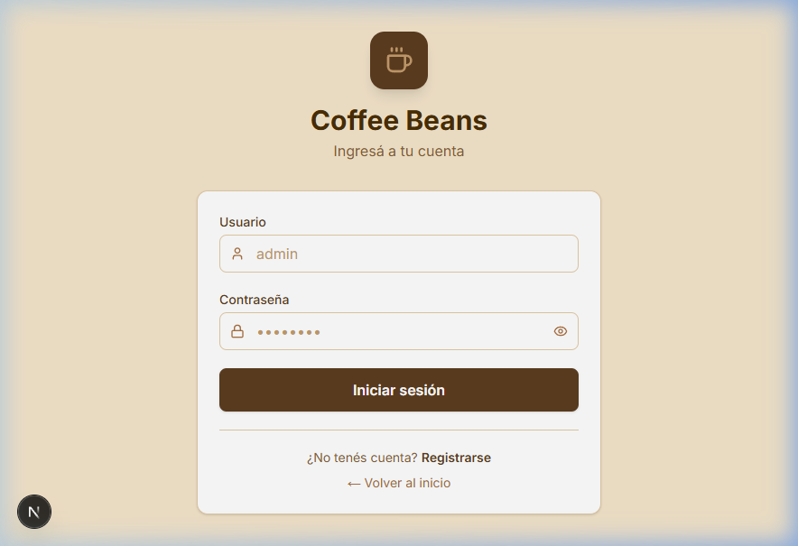
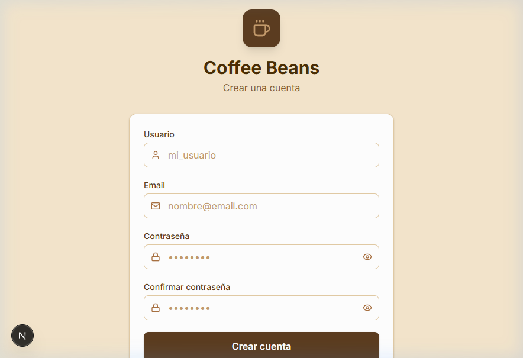
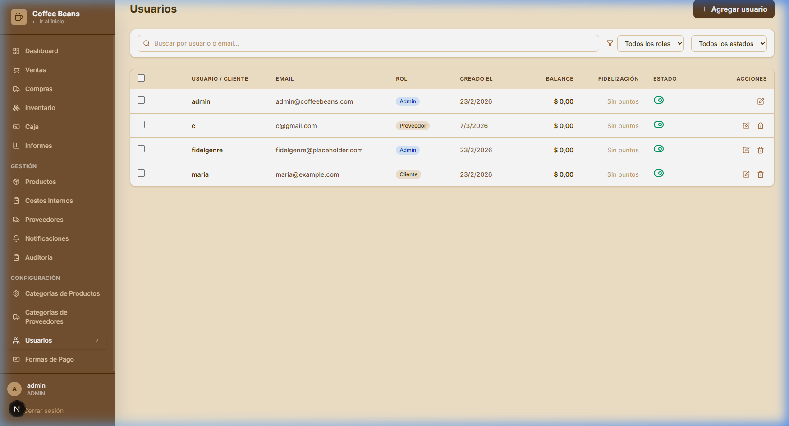
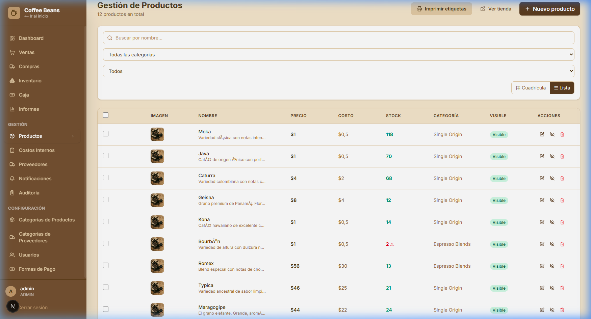
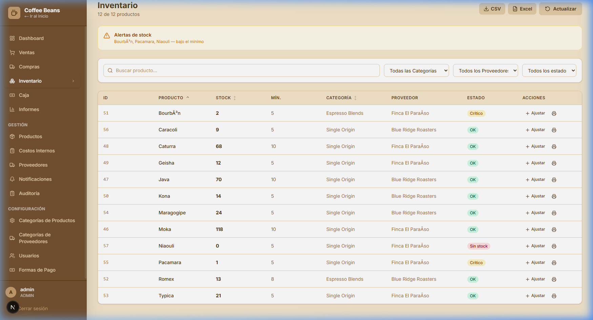

Coffee Beans - Proyecto de Desarrollo Web
Fecha de presentación: 09/03/2026
Integrantes: Fidel Genrebert – Francisco Guerin
1. Informe Preliminar del Proyecto
Situación Actual
Actualmente, la empresa simulada carece de presencia digital. Toda la información corporativa y la gestión de
pedidos se realizan a través de procesos tradicionales, como órdenes en papel en el local físico y llamadas
telefónicas para coordinar ventas o servicios de delivery. Este modelo limita la visibilidad de la marca, reduce
el alcance a nuevos clientes y dificulta la interacción eficiente con los consumidores. Asimismo, la falta de
una plataforma en línea impide que los usuarios puedan consultar productos, conocer la identidad corporativa o
realizar compras de manera remota.
Objetivo General
Desarrollar una aplicación web funcional, moderna y atractiva para la empresa simulada de producción y
comercialización de café, "Coffee Beans", con el fin de mejorar su presencia en línea, reflejar su
identidad corporativa y ofrecer una experiencia de usuario que simule un entorno de comercio electrónico
completo.
Objetivos Específicos
- Diseñar una interfaz intuitiva y estéticamente coherente con la temática del café y la identidad de la
empresa.
- Implementar un catálogo de productos y un carrito de compras funcional para los usuarios.
- Desarrollar un sistema de registro e inicio de sesión de clientes y administradores.
- Proveer una sección “Quiénes Somos” con información institucional.
- Implementar un sistema de contacto que permita a los usuarios enviar consultas, sugerencias o reclamos.
- Permitir a los usuarios seleccionar métodos de entrega y registrar la información en el sistema.
- Integrar un sistema de pagos online seguro (MercadoPago) para procesar transacciones.
- Implementar un sistema de gestión interna (Panel de Administración) para control de inventario, recetas de
productos (BOM), compras a proveedores y flujos de caja.
Alcance
El desarrollo de la página web estará orientado en primera instancia a fortalecer la presencia digital de la
empresa a nivel nacional, abarcando desde la cara visible para el cliente (Storefront) hasta la gestión interna
del negocio (Backoffice). El sistema posee arquitectura escalable, permitiendo su adaptación y expansión futura.
Requerimientos Funcionales
- Autenticación: Registro e inicio de sesión de usuarios con roles definidos (Cliente,
Administrador).
- Catálogo y Carrito: Visualización detallada de productos, manejo de carrito protegido y
cálculos exactos del total de la compra.
- Gestión de Pedidos y Pagos: Checkout integrado con MercadoPago, registro de ventas (Sale
Orders) y trazabilidad completa del ciclo de compra.
- Panel de Administración:
- Gestión de inventario avanzado (múltiples unidades de medida, stock mínimo).
- Gestión de Recetas (BOM): Deducción en cascada de insumos según componentes configurados en los
productos finales (ej. descontar bolsas, gramos de café).
- Registro de compras a proveedores y control de caja centralizado (Cash Register).
- Módulo de Contacto: Formulario para consultas y reclamos integrado en el ecosistema.
- Diseño Responsivo: Adaptación total a dispositivos móviles y de escritorio.
Requerimientos No Funcionales
- Usabilidad: Interfaz accesible y moderna adaptada al sector gastronómico especializado.
- Rendimiento y Tolerancia a Fallos: Carga rápida del catálogo y transacciones atómicas en la
base de datos para prevenir cualquier inconsistencia de stock.
- Seguridad: Contraseñas encriptadas mediante algoritmo BCrypt, uso de JWT (Json Web Tokens)
para validar el estado de las sesiones, protección de rutas y endpoints exclusivos de administrador.
- Tecnologías Empleadas:
- Frontend: Next.js (React), TypeScript, Tailwind CSS, Lucide Icons.
- Backend: Java 17, Spring Boot, Spring Security, Hibernate (JPA API).
- Base de Datos: PostgreSQL para un robusto almacenamiento de datos relacional.
2. Documentación de Diseño y Soporte
2.1. Diagrama de Casos de Uso
flowchart LR
Cliente(["🧍 Cliente"])
Administrador(["🧍 Administrador"])
subgraph Sistema
direction TB
UC1(["Añadir/Eliminar\nproductos en el carrito"])
UC2(["Registrarse en la web /\nIniciar sesión"])
UC3(["Completar pago"])
UC4(["Gestionar\ninventario/stock"])
UC5(["Modificar Productos"])
UC6(["Iniciar sesión en el\npanel de administración"])
UC7(["Gestionar usuarios"])
UC8(["Gestionar pedidos"])
end
Cliente --> UC1
Cliente --> UC2
UC2 -. "<<extend>>" .-> UC3
Administrador --> UC4
Administrador --> UC5
Administrador --> UC6
Administrador --> UC7
Administrador --> UC8
Nota: El administrador posee acceso exclusivo al panel de administración. El cliente puede registrarse,
iniciar sesión y gestionar su carrito; el pago es una extensión del flujo de sesión.
2.2. Especificaciones de Casos de Uso y sus Respectivas Interfaces
Interfaz de Login:

Iniciar sesión
Actor: Administrador / Cliente
Descripción: Permite acceder al sistema mediante usuario y contraseña.
Precondición: Usuario registrado en el sistema.
Flujo principal:
- El usuario ingresa su nombre de usuario y contraseña.
- El sistema valida las credenciales contra la base de datos.
- Si son correctas, el servidor genera un JWT y lo devuelve al cliente.
- El usuario accede al sistema con vista de Admin o Cliente según su rol.
Postcondición: Sesión iniciada con token JWT válido.
Interfaz: campos: usuario, contraseña; botón "Iniciar sesión"; enlace "Registrarse".
Alternativo:
- Credenciales incorrectas: el sistema muestra "Invalid credentials".
- Cuenta inactiva: el sistema muestra "Account disabled".
Interfaz de Registro:

Registrarse
Actor: Cliente
Descripción: Permite crear una nueva cuenta en el sistema para poder iniciar sesión y
comprar.
Precondición: No poseer una cuenta registrada con el mismo usuario o email.
Flujo principal:
- El usuario completa el formulario con nombre de usuario, email y contraseña.
- El sistema valida que el usuario no esté repetido.
- Se crea el usuario con rol Cliente y se genera automáticamente su perfil en el CRM.
- El sistema devuelve un JWT y redirige al catálogo.
Postcondición: Usuario registrado en la base de datos, sesión iniciada.
Interfaz: campos: usuario, email, contraseña; botón "Registrarse"; enlace "Iniciar sesión".
Alternativo:
- Usuario ya registrado: el sistema muestra "Username already taken".
Interfaz de Usuarios:

Gestionar usuarios
Actor: Administrador
Descripción: Administrar los usuarios del sistema: crear, editar rol, activar/desactivar y
eliminar.
Precondición: Usuario autenticado con rol Administrador.
Flujo principal:
- El administrador accede a la sección Usuarios del panel.
- Visualiza el listado de usuarios con nombre, email, rol y estado.
- Puede crear un nuevo usuario asignándole rol Admin o Cliente.
- Puede editar el rol de un usuario existente.
- Puede activar o desactivar la cuenta de un usuario.
- Puede eliminar usuarios (excepto el admin principal).
Postcondición: Cambios persistidos en la base de datos.
Interfaz: tabla con nombre, email, rol, balance, fidelización, estado; botones de editar y
eliminar; filtros de búsqueda y rol.
Alternativo:
- Eliminar admin principal: el sistema devuelve error 403.
- Eliminar usuario con saldo pendiente: el sistema bloquea la operación con mensaje de error.
Interfaz de Productos:

Gestionar productos
Actor: Administrador
Descripción: Crear, editar, ocultar y eliminar productos del catálogo.
Precondición: Usuario autenticado con rol Administrador.
Flujo principal:
- El administrador accede al módulo de Productos.
- Visualiza el catálogo completo con nombre, precio, categoría, stock y estado.
- Puede añadir un nuevo producto con nombre, descripción, imagen, precio y categoría.
- Puede editar cualquier campo de un producto existente.
- Puede ocultar un producto para que no aparezca en el catálogo público.
- Puede eliminar productos sin ventas asociadas.
Postcondición: Catálogo actualizado. Cambios visibles en el panel y en la tienda.
Interfaz: campos: nombre, descripción, imagen, precio, categoría, proveedor, stock mínimo;
botones: Guardar, Cancelar, Ocultar/Mostrar.
Alternativo:
- Campos vacíos obligatorios: el sistema muestra validación de error.
- Eliminar producto con ventas: el sistema bloquea la operación.
Interfaz de Inventario y Compras:

Ajustar inventario / Registrar compra
Actor: Administrador
Descripción: Controla el stock de productos e ingresa compras a proveedores para reabastecer
inventario.
Precondición: Usuario autenticado con rol Administrador.
Flujo principal:
- El administrador accede al módulo de Inventario.
- Visualiza el listado de ítems con stock actual, stock mínimo y proveedor asociado.
- Puede ajustar el stock manualmente por correcciones o pérdidas.
- Para reabastecer: selecciona el ítem, ingresa cantidad y costo, selecciona proveedor y confirma la
compra.
- El sistema registra el movimiento de stock y la orden de compra al proveedor.
- El sistema alerta visualmente los ítems con stock por debajo del mínimo.
Postcondición: Stock actualizado e incrementado. Orden de compra registrada.
Interfaz: tabla con nombre, stock actual, stock mínimo, proveedor; campos de ajuste:
cantidad, costo; botones: Comprar, Editar, Borrar; filtros de categoría y proveedor.
Alternativo:
- Cantidad inválida (negativa o no numérica): el sistema muestra mensaje de error.
2.3. Diagrama de Clases (Arquitectura Backend Central)
classDiagram
direction LR
class usuario {
+Long id
+String nombre
+String email
+String contrasena
+iniciarSesion()
+registrarse()
}
class rol {
+String idRol: cliente, administrador
+gestionarUsuarios()
+gestionarPedidos()
+gestionarInventario()
+emitirCompras()
}
class venta {
+Long id
+Decimal total
+añadirProducto()
+eliminarProducto()
+calcularTotal()
}
class detalleVenta {
+Long id
+Integer cantidad
+Decimal precio
+Decimal subtotal
+String producto
+calcularSubtotal()
+generarNumeroOrden()
}
class inventario {
+Long id
+Integer stockMinimo
+Integer stockActual
+Integer stockMaximo
+actualizarStock()
}
class compra {
+Long id
+Date fecha
+Decimal total
+String usuario
+confirmarCompra()
+cancelarCompra()
+calcularTotal()
}
class detalleCompra {
+Long id
+Integer cantidad
+Decimal precio
+String producto
+Decimal subtotal
+calcularSubtotal()
}
class producto {
+Long id
+String nombre
+String descripcion
+Decimal precio
+Integer cantidad
+obtenerPrecio()
+modificarPrecio()
+actualizar()
}
class proveedor {
+Long id
+String nombre
+String email
+String direccion
+añadirProducto()
+eliminarProducto()
}
usuario "1" -- "1..*" rol
usuario "1" -- "1..*" venta
venta "1" -- "1..*" detalleVenta
detalleVenta "1..*" -- "1..*" producto
detalleVenta "1..*" -- "1" inventario
inventario "1" -- "1" detalleCompra
producto "1" -- "1" inventario
producto "1..*" -- "1..*" detalleCompra
compra "1" -- "1..*" detalleCompra
compra "0..*" -- "1" proveedor
compra "0..*" -- "1" usuario
2.4. Diagrama de Implementación de Tablas (Modelo de Datos Físico/DER)
erDiagram
usuario ||--o{ orden_venta : "realiza"
rol ||--o{ usuario : "posee"
orden_venta ||--o{ linea_venta : "tiene_detalle"
linea_venta }|--|| producto : "descarga_stock"
producto ||--|| inventario : "acumula"
producto ||--o{ receta_insumo : "es_conformado_por"
producto ||--|{ orden_compra : "reabastece"
usuario ||--o{ orden_compra : "registra_ingreso"
proveedor ||--o{ orden_compra : "entrega"
rol {
VARCHAR idRol PK
}
usuario {
BIGSERIAL id PK
VARCHAR nombre
VARCHAR email
VARCHAR contrasena
VARCHAR idRol FK
}
orden_venta {
BIGSERIAL id PK
DECIMAL total
VARCHAR payment_id
VARCHAR estado_transaccion
BIGINT usuario_id FK
}
linea_venta {
BIGSERIAL id PK
DECIMAL cantidad
DECIMAL precio_unitario
DECIMAL subtotal
BIGINT venta_id FK
BIGINT producto_id FK
}
producto {
BIGSERIAL id PK
VARCHAR nombre
VARCHAR descripcion
DECIMAL precio
DECIMAL tamanio_unidad
VARCHAR magnitud_peso
}
receta_insumo {
BIGSERIAL id PK
DECIMAL cantidad_restada
BIGINT insumo_asociado_id FK
BIGINT producto_padre_id FK
}
inventario {
BIGSERIAL id PK
DECIMAL stockActual
DECIMAL stockMin_Alerta
BIGINT producto_id FK
}
orden_compra {
BIGSERIAL id PK
VARCHAR fecha_ingreso
DECIMAL desembolso
BIGINT registrado_por_usuario FK
BIGINT proveedor_id FK
}
proveedor {
BIGSERIAL id PK
VARCHAR razon_social
VARCHAR email
}
2.5. Documentación de Pruebas y Validación
El sistema requirió a lo largo de su integración y estabilización, los siguientes escenarios de control de
calidad documentados:
-
Caso: Autenticación con Token (JWT Seguridad)
- Acción del QA: Creación de usuario administrador mediante interceptación manual de
API (POST) y validación de rutas privadas.
- Resultado Esperado: Protección persistente de endpoints. Sin el header
"Authorization: Bearer [token]", cualquier solicitud al ecosistema
api/admin/* debe ser bloqueada con Status 403 Forbidden.
- Estado Actual: Aprobado. Las capas de filtros lógicos de Spring
Security aprueban el token únicamente si fue firmado con el secreto local.
-
Caso: Integridad del Carrito - Limitantes de Stock / Tipos de Unidad
- Historia: Requeríamos impedir a usuarios malintencionados o al mismo UI, generar
carritos superiores al inventario limitante (ej. solicitar 50 bolsas cuando solo quedan 2), como a
su vez lidiar correctamente con transacciones sin alterar el monto real de manera
exponencial según los gramos.
- Modificación: Se limitó por estricta directriz de pasos intermedios (step) la
modificación manual a "cantidades enteras" en el Frontend.
- Resultado Esperado: Ventas exclusivas de bolsas finalizadas sin decimales ambiguos
de compra para el consumidor, previniendo sobrefacturaciones erróneas.
- Estado Actual: Aprobado. El frontend impide la inserción errática
(ej. 0.1 bolsas) corrigiéndolo al entero base más cercano e inhibiendo sumar items arriba del stock
maestro.
-
Caso: Transaccionalidad de Componentes Hijos de Receta (BOM)
- Historia: Validar la consistencia íntegra del
ItemComponent.
- Desarrollo: Interacción comercial ejecutada para un "Item A" conformado
por "Item B y C".
- Auditoría: Se inspeccionó en el panel visualizador de
StockMovement si ambos Item B e Item C fueron reducidos conforme la suma de la
venta maestra de "Item A" por sus respectivas tasas de deducción multiplicadas por el
unitSize subyacente de control de kilos.
- Estado Actual: Aprobado.
3. Informe Tecnológico
El proyecto experimentó una migración de su pauta de tecnologías teóricas a implementaciones finales
empresariales optimizadas a fin de asegurar tanto escalabilidad vertical como horizontal ante demandas reales,
resultando en:
-
Frontend Arquitectura React/Next:
Se empleó Next.js impulsando React con el poderoso supra-lenguaje
TypeScript. Abarcando un sistema altamente reactivo de estado donde variables del
carrito, validaciones interactivas, y visualizaciones del catálogo actualizan de manera asíncrona la
vista (Virtual-DOM) al instante de las llamadas REST a la API sin recargar la página. Para el estilado
de impacto visual limpio, se aplicó íntegramente la utilidad atómica de Tailwind CSS.
-
Backend Enterprise:
En lugar del enfoque inicial propuesto basado en Node.js, para un proyecto que contempla transacciones
financieras, control estricto relacional y requerimientos de seguridad bancarios; fue natural inclinar
el desarrollo hacia Java 17 bajo la tutela del Framework Spring Boot.
Spring sirvió como un núcleo con Inversión de Control. Proveyó rutinas transaccionales fiables (vía
@Transactional) esenciales para garantizar que si un movimiento de stock colisiona o la
pasarela de pago responde fallos, ningún ítem en la base de datos sea debitado en un estado intermedio
(Principio de Aislamiento ACID).
-
Gestión de Sesiones Seguras y Capacidad a Pruebas de Ciberataque:
Validación mediante cifrado fuerte (BCrypt). Descartamos gestiones de sesión propensas a
interceptores vía inyecciones XSS tradicionales, adoptando el estándar global de Autenticación
sin Estado basado en Json Web Tokens (JWT) que firman e incluyen los privilegios de los
usuarios (Roles) para las aprobaciones de Spring Security MVC en tiempo de procesamiento.
-
Base de Datos Unificada:
Las interacciones fueron integradas nativamente mapeadas con la interfaz de persistencia Java (JPA /
Hibernate) directo al motor transaccional de uso libre más poderoso mundialmente:
PostgreSQL. Permitiendo una arquitectura en la nube escalable para la centralización
unívoca de usuarios, recetas de componentes e información financiera.